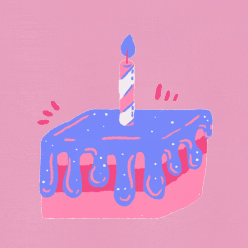
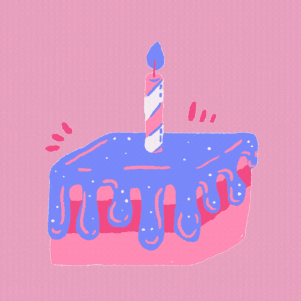

"Ica Nur Faidzah"
Hai sayaaaang, ini hadiah dari aku. Sebelumnya maafin aku yaa
Cuma bisa bikinin ini ☹ aku mau banyak improve cuman aku error terus
jadi maafin aku kalau jelek ☹. Barakallah fii umrik Ica Nur
Faidzah.Semoga Panjang umur,sehat selalu dan di mudahkan dalam segala
urusannya. Kamu cantik dan tambah dewasa sayaang. Kamu hebat bisa
bertahan sejauh ini. Tetep temenin di sisi aku yaa jangan pergi ☹ nanti
aku sedih huhuhuhuu….. sehat terus cantik aku. Maafin aku Cuma bikin
ini. Aku harap kamu suka sayaang. Semoga kamu suka. aaammiinn
Kamu hebat sayangku,jangan insecure atau overthinking yaa. Aku
bakalan terus sama kamu kok. Kamu jangan takut kehilangan aku. Aku
sayang kamu ica nur faidzah. Sayaaaang, ngga terasa yaa waktu begitu
cepat berlalu. Banyak kisah yang kamu tuliskan dalam hidup kamu. Itu
semua sangat berharga dan aku pengen denger kamu certain itu semua.
Sayaaang, kamu paling hebat…. Maaaciii banyak udah izinin aku untuk
nemenin kamu dan jadi bagian dari cerita kamu….. aku beruntung banget
tau bisa sama kamu…
Sayaaaang, aku pengen denger dong apaa harapan kamu di tahun ini?
Aku doakan apapun harapan kamu semoga terkabul yaa sayaaang, aaammiinnn.
Saayaaang maafin aku yaa ngga bisa kasih hadiah barang ☹ aku Cuma bisa
kasih ini, soalnya AKU NGGA ADA UANG HUHUHUHU……Tapi nanti kalau ada uang
aku beliin sesuatu buat kamu…
Kamu yang sehat yaa, jangan banyak pikiran. Mamam yang banyak
okee…jangan stress stress, kamu harus selalu ceriaaa. Agar dunia ini
ceria. Ketika kamu ceria dan Bahagia alam pun akan menyambut kamu dengan
Bahagia dan ceria. Sayaaaang kamu hebat bangeet ciiii… kamu keren banget
aku bangga sama kamu. Aku sayaaang banget sama kamu… kamu terbaik ❤️
Pesan dari aku jangan lupa di baca….jangan nangis yaa wlee 😊